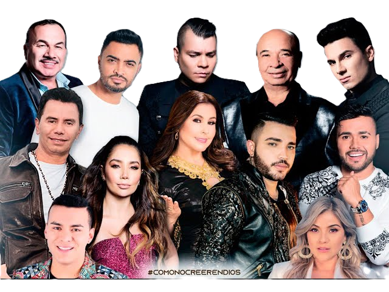

ESTOS SON MIS PASATIEMPOS
| Nombre |
Tiempo |
recomendado |
tipo |
Cómo se considera |
| Motos |
2-4 horas |
si |
grupal |
bueno |
| Fútbol |
1-2 horas |
si |
grupal |
buenop |
| Música |
1-3 horas |
si |
individual |
bueno |
MOTOS
- Me gusta salir a manejar mi moto e irme a conocer muchas partes
- Disfruto mucho salir al aire libre
- Me gusta tomar fotos a paisajes cada vez que salgo


FUTBOL
- Disfruto mucho porme a mirar partidos,seguir las ligas de futbol y apoyar siempre a mis equipos favotitos
- Me gusta ir al estadio a mirar partidos de la primera C


MUSICA
- Me gusta escuchar musica
- disfruto mucho escuchar mis cantantes favoritos
- me gusta ir mucho a conciertos
